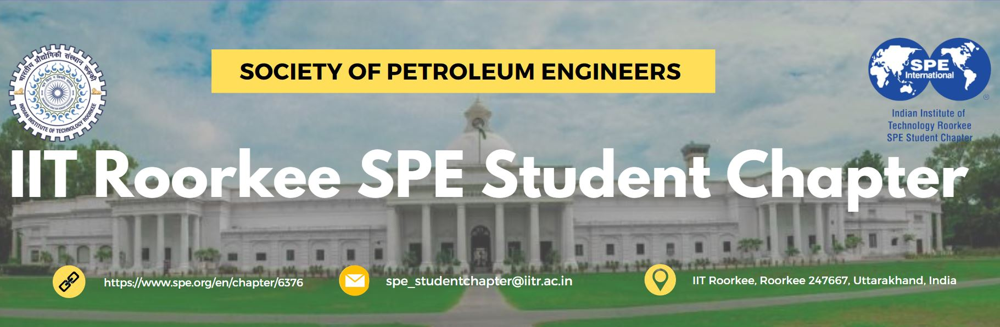
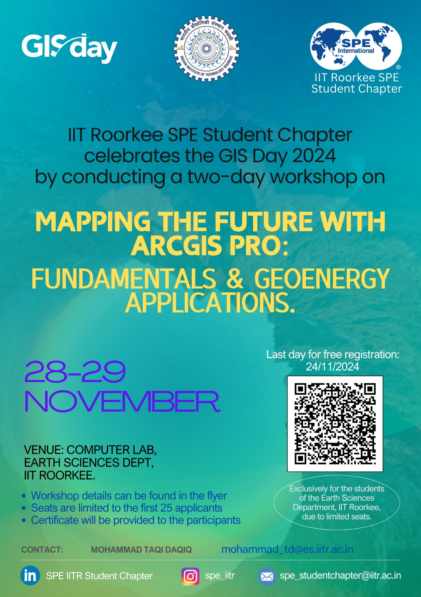

Enthusiasts at IIT Roorkee
Foundation of IIT Roorkee SPE Student Chapter
The Society of Petroleum Engineers (SPE) IIT Roorkee Student Chapter was established with the goal of fostering technical knowledge, skill development, and networking opportunities for students interested in petroleum engineering and related fields. It serves as a platform for students to engage with industry professionals, access valuable resources, and participate in events, workshops, and competitions. The chapter aims to bridge the gap between academic learning and industry practices, empowering students to gain hands-on experience and stay updated on emerging technologies and trends within the energy sector.
EnergyTechEvents
The IIT Roorkee SPE Student Chapter played a key role in Cognizance, India’s largest technical fest, by organizing a series of EnergyTech Events that brought students, experts, and industry professionals together to discuss innovations and challenges in the energy sector. These events showcased cutting-edge developments in petroleum engineering, renewable energy, and sustainable technologies, offering hands-on workshops, technical quizzes, and panel discussions.

Earth Sciences Ideaz: Energetica
Earth Sciences Ideaz: Energetica is a flagship event organized by the IIT Roorkee SPE Student Chapter that invites students to present innovative solutions to pressing challenges in the energy and earth sciences sectors. This competition encourages participants to tackle issues like sustainable energy, efficient resource utilization, and environmental preservation through creative and research-backed ideas.

ScienTechFun
ScienTechFun is a flagship event organized by the IIT Roorkee SPE Student Chapter that invites students to present innovative solutions to pressing challenges in the energy and earth sciences sectors. This competition encourages participants to tackle issues like sustainable energy, efficient resource utilization, and environmental preservation through creative and research-backed ideas.

EnergyTech Knowledge
EnergyTech Knowledge is an educational competition event organized by the IIT Roorkee SPE Student Chapter that focuses on expanding students’ understanding of the latest advancements in energy technologies and the evolving energy landscape.

Know Your Alum Lecture
Know Your Alum is an insightful online lecture series organized by the IIT Roorkee SPE Student Chapter, designed to connect students with accomplished alumni in the energy and earth sciences fields. This event provides students with an opportunity to gain firsthand knowledge of career paths, industry trends, and practical advice from alumni who have excelled in various sectors.
.png)
Intern Talk
Intern Talk is an inspiring lecture series hosted by the IIT Roorkee SPE Student Chapter, featuring students from the department who have secured prestigious internships in leading organizations. This event provides attendees with insights into the application process, interview preparation, and experiences during these internships. By sharing personal stories, practical tips, and lessons learned, the speakers aim to guide their peers in navigating internship opportunities and building successful careers.

Mapping the Future with ArcGIS Pro: Fundamentals & GeoEnergy Applications
As part of GIS Day 2024, the IITR SPE Student Chapter hosted a two-day workshop, "Mapping the Future with ArcGIS Pro: Fundamentals & GeoEnergy Applications," on 28th–29th November. Held at the Department of Earth Sciences, IIT Roorkee, the workshop introduced participants to GIS fundamentals, hands-on ArcGIS Pro training, and GeoEnergy applications. Open to Earth Sciences students, with priority for IITR SPE members, the event saw an enthusiastic turnout. Attendees gained valuable skills and insights into GIS applications, reinforcing the chapter's commitment to fostering technical expertise and professional growth in the geosciences field.
